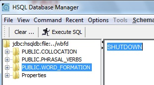

1- Can I modify an exercise?
Yes and no. WBFD has not editor to modify the exercises. However, you can do directly in database if you know SQL. The database used by WBFD is Hsqldb and it is no prorected by user /password. In the folder common:
Now you can modify the database.
NOTE: When finish type the query SHUTDOWN / men? Command-SHUTDOWN> and press thr button Execute SQL. This close the connection with the database and consolidate the changes. Otherwise, changes can be lost.
